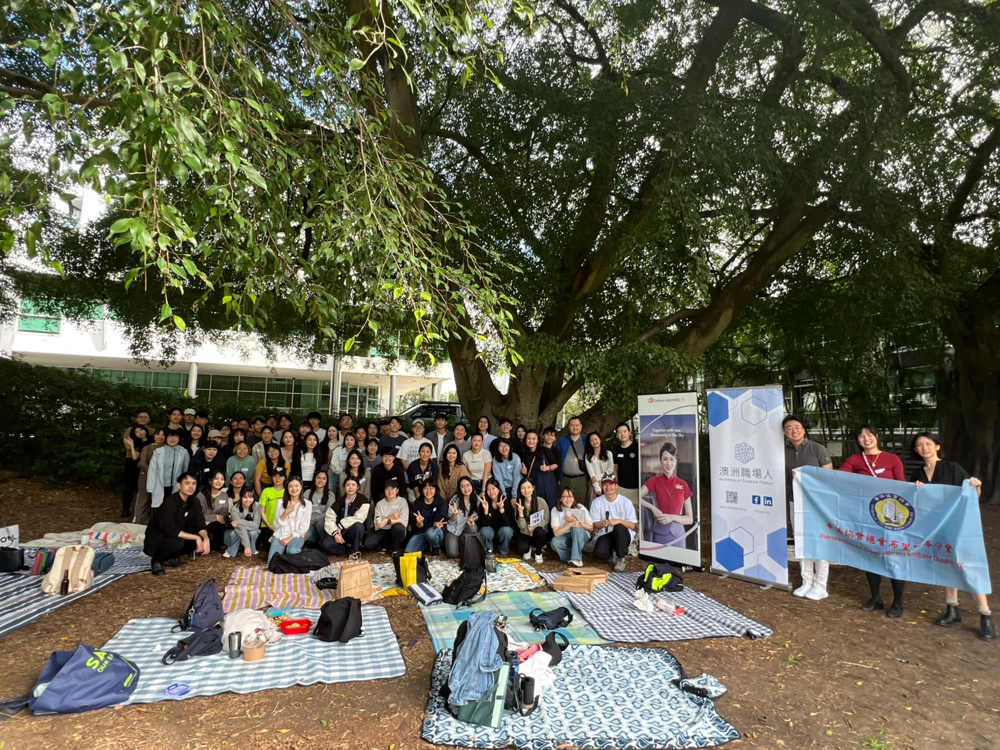
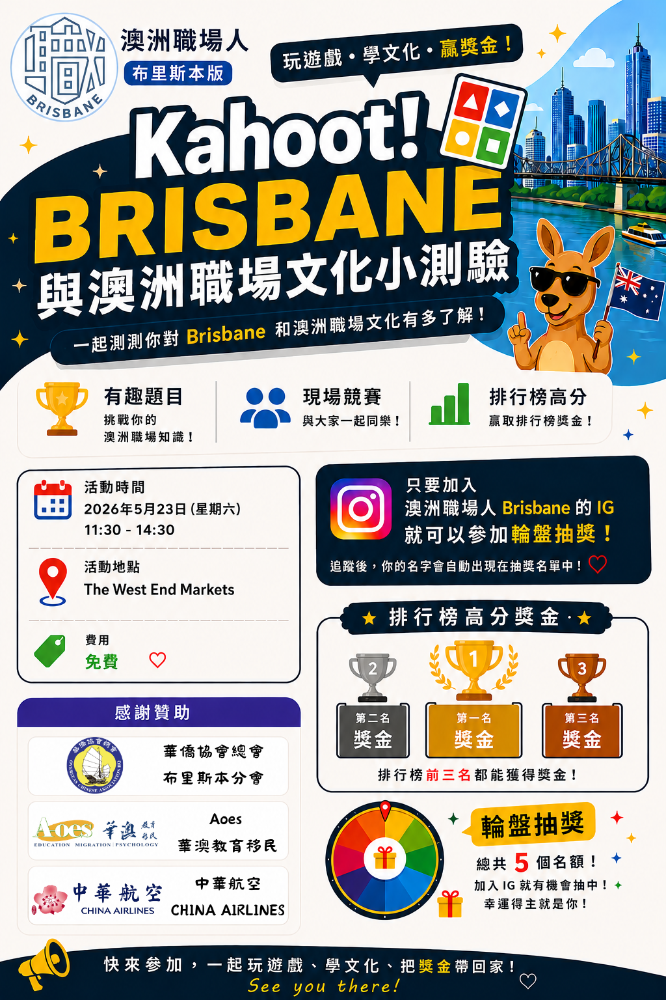

社群紀錄
活動相簿
照片依照活動分類，點選相簿即可查看該場活動的資訊與完整照片。


2026年5月23日・西區市集
Kahoot Brisbane 與澳洲職場文化小測驗
共 10 張活動照片更多活動相簿將持續加入
每一場活動都會建立獨立相簿，方便清楚瀏覽與回顧。
社群紀錄
照片依照活動分類，點選相簿即可查看該場活動的資訊與完整照片。


2026年5月23日・西區市集
每一場活動都會建立獨立相簿，方便清楚瀏覽與回顧。